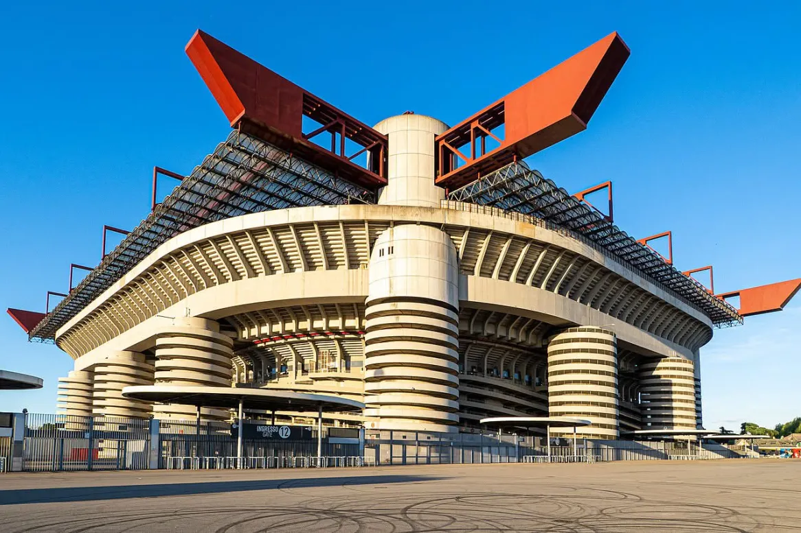

San Siro Stadium to jeden z najsłynniejszych stadionów piłkarskich na świecie. San Siro znajduje się w Mediolanie we Włoszech. Jest domem dwóch klubów: AC Milan oraz Inter Mediolan. Stadion został otwarty w 1926 roku. Jest jednym z największych stadionów we Włoszech. Jego pojemność wynosi około 75 tysięcy widzów. San Siro słynie z wyjątkowo głośnej atmosfery. Stadion był wielokrotnie modernizowany. Obiekt gościł mecze Mistrzostw Świata w 1990 roku. Stadion jest znany również jako Stadio Giuseppe Meazza. Giuseppe Meazza był legendarnym włoskim piłkarzem. San Siro jest jednym z najbardziej rozpoznawalnych stadionów w Europie. Na stadionie rozgrywany jest słynny derbowy mecz Mediolanu. Jest jednym z najbardziej legendarnych obiektów sportowych na świecie.